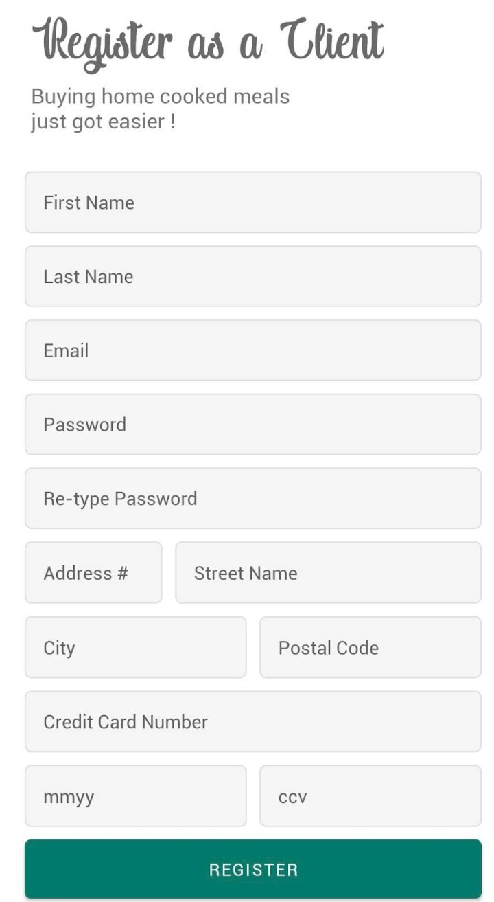
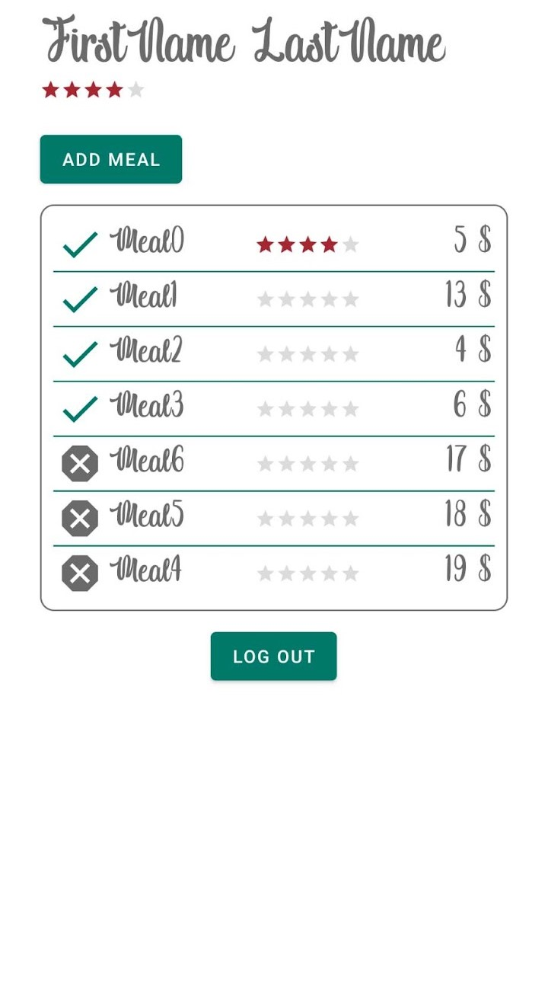

CSI 3540 - Laboratoires
Laboratoire 1: Développement avec Git et GitHub
Configuration de l'environnement de développement avec Git pour la gestion du code source et GitHub pour collaborer avec les autres
Laboratoire 2: Pull requests, conflits de code et rebasing
Écrire du code HTML et travailler sur Git en intégrant GitHub
Laboratoire 3: CV de l'étudiant en HTML
Convertir mon CV en une page Web à l'aide d'HTML et de CSS.
Mes projets
Application Android: Mealer
Dans le cadre du cours d'Introduction au génie logiciel, mes trois collègues et moi avons développé un application de partage de repas basée à Ottawa. Elle avait pour but de permettre aux cuisiniers locaux de vendre des repas à des clients via l'application.
Logiciels utilisés:
- Android Studio
- Firebase
- Language: Java
Informations sur l'application:
- Trois types d'usagers: Client, Cuisiner, Administateur
- Possibilité de laisser une rétroaction d'un repas ou une plainte contre un cuisinier
- Possibilité de suspendre ou banir un cuisinier
- Barre de recherche disponible pour catégoriser les repas
- Inclus le diagramme UML et des tests unitaires
Limitations:
- N'inclue pas une vérification assidue du courriel ni du spécimen chèque lors de l'inscription
- La transaction monétaire n'a pas été implémentée
Design de l'application:
 _____ 